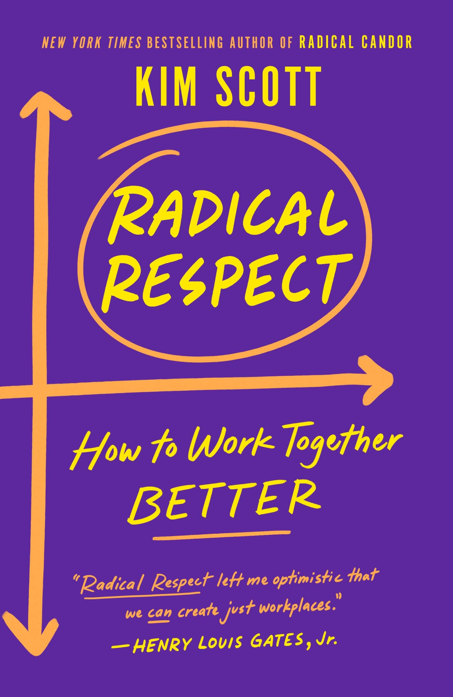

Radical Respect
⭐️⭐️⭐️
Format: audio (9 hours 21 minutes)
(I chose to read this for yet another work book club.) I liked how this started, but was underwhelmed by the time it ended. That feels weird to say about a business book, but this one took a turn in the middle of the book. I appreciate the premise - don't be a turd to other people. Not only don't be a turd, but start with being respectful. The second half of the book seemed to be hyper-focused advice about things I have so rarely encountered in my career. It feels like the majority of the shared experiences took place before I started my professional career - so I can't tell if they're just dated, or if I'm simply oblivious. Regardless, just because I haven't witnessed the vast majority of those types of things doesn't mean it's not a real problem still. So, I can appreciate the bystander intervention advice, as well as being a good listening ear. I'll be interested in the conversation about it.
- Previously: The 100-Year-Old Man Who Climbed Out the Window and Disappeared
- Next: Spin